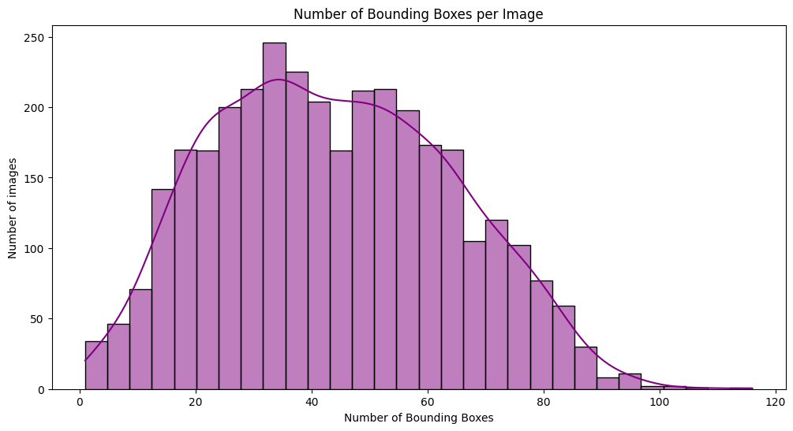
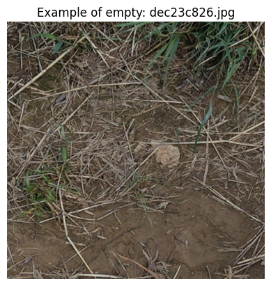
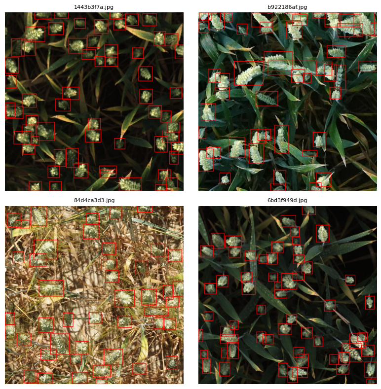
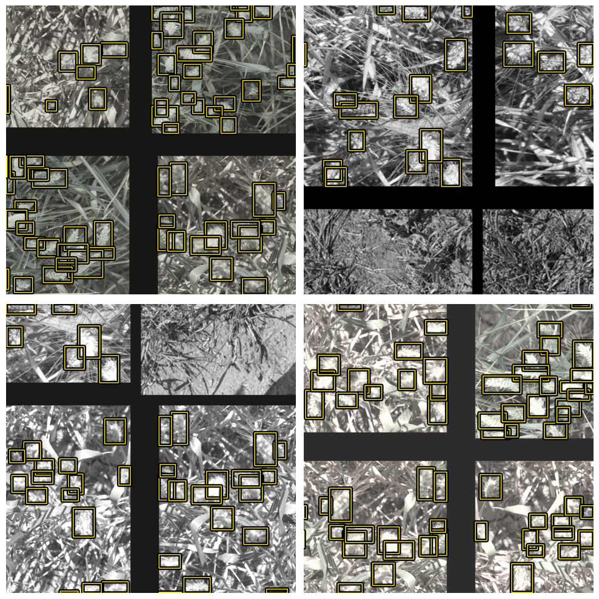
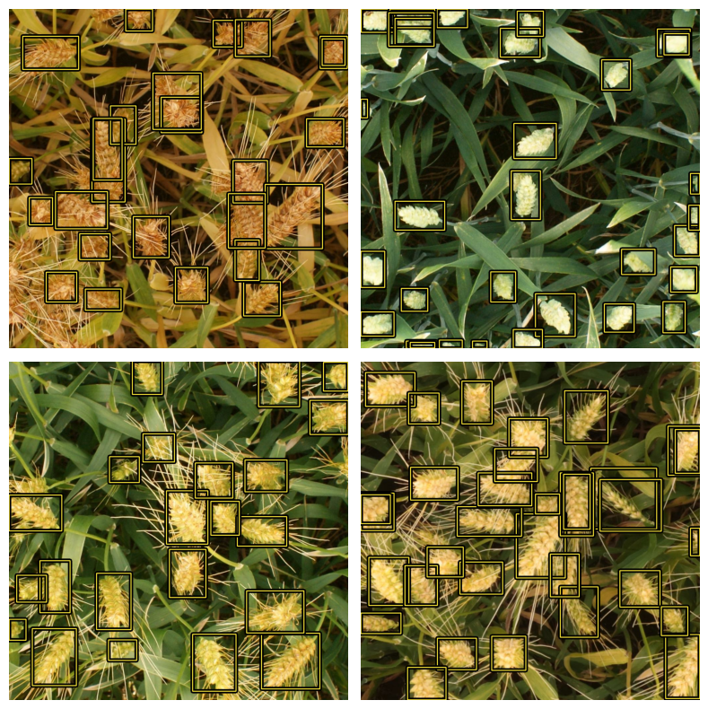
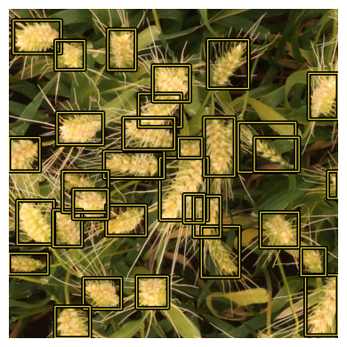
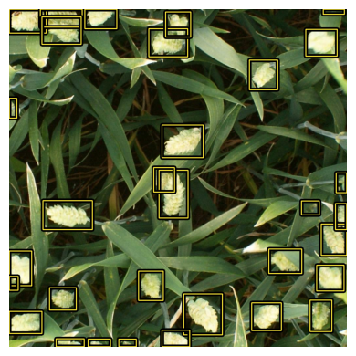

Training Environment & Dependencies
Main libraries, accelerator setup, and reproducibility controls used by the YOLOv8 training notebook.
.keras detector artifact.steps_per_execution optimization for high-throughput 1024×1024 training.[x, y, w, h] to xyxy conversion, metadata handling, class mapping, and reproducible split preparation.Dataset Structure & Detection Difficulty
EDA revealed dense boxes, rare empty images, and small target objects in full-resolution field photographs.
| EDA Component | Measured Value | Design Impact |
|---|---|---|
image_shape | 1024×1024×3 | High resolution is preserved because wheat heads are small and spatial details matter. |
bbox_count | 147,793 annotations | The detector sees many positive boxes and needs efficient dense prediction. |
boxes_per_image | mean 43.82 · std 20.37 · max 116 | WBF/TTA is useful because crowded scenes produce duplicate and overlapping predictions. |
bbox_width | mean 84.44 · median 78 px | Small-object sensitivity is essential; FPN-style multi-scale features help. |
bbox_height | mean 76.93 · median 71 px | Boxes are compact relative to the full image, so aggressive downscaling would lose signal. |
negative_samples | 49 images without annotations | Empty images are added only to training to teach background rejection. |



YOLOv8-M Architecture, Losses & Detection Logic
A COCO-pretrained one-stage detector is adapted to the single wheat-head class using KerasCV.
YOLOV8Backbone.from_preset('yolo_v8_m_backbone_coco') and a YOLOV8Detector head.fpn_depth=3, allowing high-level semantics and lower-level spatial detail to interact. This matters because wheat heads can be small, partially hidden, and densely packed.Core model parameters
- Input size:
1024×1024 - Classes:
1wheat-head class - Bounding box format:
xyxy - Backbone:
yolo_v8_m_backbone_coco - Visible backbone parameter count in summary:
11,872,464
Optimization controls
- Optimizer:
AdamW - Weight decay:
1e-3 - Gradient clipping:
global_clipnorm=10.0 - BatchNorm layers frozen to avoid unstable running statistics with small batches
Ragged Tensors, Splits & Augmentation Strategy
The notebook prepares variable-length boxes with tf.data and uses phase-specific augmentation strength.
[x, y, w, h] to [x_min, y_min, x_max, y_max].tf.data.AUTOTUNE and prefetching overlap CPU loading/augmentation with GPU training.Warmup / early robustness
Uses JitteredResize(0.9–1.1), Mosaic, horizontal flip, strong color jitter, and color degeneration. Mosaic is especially useful because it exposes the model to more object arrangements and denser context per batch.
Mid/Fine-tune stability
Uses reduced scale jitter 0.95–1.05, horizontal flip, milder color jitter, and lower color degeneration. This keeps the training distribution closer to validation while still preventing overfitting.
# Warmup / early training: maximize variation
augmenter_strong = tf.keras.Sequential([
keras_cv.layers.JitteredResize(
target_size=IMG_SIZE,
scale_factor=(0.9, 1.1),
bounding_box_format="xyxy"
),
keras_cv.layers.Mosaic(
bounding_box_format="xyxy", name="mosaic"
),
keras_cv.layers.RandomFlip(
mode="horizontal", bounding_box_format="xyxy"
),
keras_cv.layers.RandomColorJitter(
value_range=(0, 255),
brightness_factor=0.2,
contrast_factor=0.2,
saturation_factor=0.2,
hue_factor=0.1,
),
keras_cv.layers.RandomColorDegeneration(
factor=(0.2, 0.7), seed=SEED
),
])# KerasCV needs ragged boxes: each image has a different object count def create_strong_dataset(records, batch_size=BATCH_SIZE): paths, classes, boxes = prepare_inputs(records) ds = tf.data.Dataset.from_tensor_slices((paths, classes, boxes)) ds = ds.shuffle(BUFFER_SHUFFLE_SIZE) ds = ds.map(load_dataset, num_parallel_calls=AUTO) ds = ds.ragged_batch(batch_size, drop_remainder=True) ds = ds.map(augmenter_strong, num_parallel_calls=AUTO) ds = ds.map(dict_to_tuple, num_parallel_calls=AUTO) return ds.prefetch(AUTO) # Mid/fine-tune swaps to lighter augmentation def create_light_dataset(records, is_training=False): augmenter = augmenter_light if is_training else augmenter_val # same load → ragged_batch → augment → tuple → prefetch path return build_dataset(records, augmenter, is_training)

Three-Phase Training Diagnostics
Warmup stabilizes the head, mid-tune specializes deeper features, and fine-tune reaches the final mAP ceiling.
1e-3. The head learns wheat localization without disturbing pretrained COCO features.1e-5 gives smaller but valuable improvements, especially for tiny/distant wheat heads.| Metric | Warmup Best | Mid-Tune Peak | Fine-Tune Peak | Meaning |
|---|---|---|---|---|
Validation mAP | 0.4617 | 0.5063 | 0.5127 | Main COCO-style detection quality metric. |
mAP@50 | 0.8272 | 0.8686 | 0.8704 | Loose IoU localization; strong indication the detector finds wheat heads. |
mAP@75 | 0.4617 | 0.5262 | 0.5331 | Stricter localization; improved during deeper tuning. |
Training box loss | 1.2328 | 1.0480 | 0.9734 | Regression loss continued declining through fine-tuning. |
Diagnostic Breakdown: The biggest improvement happened during warmup (+0.2087 mAP), confirming the pretrained detector adapted quickly. Mid-tune crossed the 0.50 mAP threshold and improved stricter box alignment. Fine-tune added a smaller but important final gain to 0.5127, which is expected for a dense small-object competition where overlap and occlusion create a practical ceiling.
Model Parameters & Training Controls
The notebook keeps the detector close to the competition setup: full 1024×1024 images, one wheat-head class, AdamW regularization, and staged learning rates.
| Parameter Group | Notebook Value | Implementation Role |
|---|---|---|
IMG_SIZE | (1024, 1024) | Full-resolution training keeps wheat heads large enough for reliable box regression. |
NUM_CLASSES | 1 | Single detector class: wheat head. The challenge is localization density, not class variety. |
bounding_box_format | xyxy | All training, augmentation, metrics, TTA reversal, and WBF logic use xmin/ymin/xmax/ymax. |
backbone preset | yolo_v8_m_backbone_coco | COCO-pretrained YOLOv8-M backbone provides general object features before agricultural fine-tuning. |
backbone params | 11,872,464 | The visible backbone summary confirms the medium preset size used for this portfolio detector. |
fpn_depth | 3 | Feature Pyramid depth controls multi-scale detection refinement for small, medium, and larger wheat heads. |
BATCH_SIZE_PER_REPLICA | 4 | Chosen because 1024×1024 object-detection tensors are memory heavy. |
BUFFER_SHUFFLE_SIZE | 512 | Randomizes training order without huge memory overhead. |
GLOBAL_CLIPNORM | 10.0 | Clips gradient norm to reduce exploding updates during dense box optimization. |
optimizer | AdamW | Combines Adam-style adaptive learning with decoupled weight decay for regularized fine-tuning. |
classification_loss | FocalLoss() | Down-weights easy background/low-value examples and emphasizes hard wheat-head detections. |
box_loss | ciou | Optimizes overlap, center distance, and aspect-ratio consistency for tighter boxes. |
steps_per_execution | 32 on TPU else 1 | Improves TPU execution efficiency while keeping GPU/CPU behavior simple. |
WARMUP_LR | 1e-3 | Fast detector-head adaptation while the backbone is frozen. |
FINE_TUNE_BB_LR | 1e-4 | Partial backbone tuning from stack4_downsample_conv with cosine decay. |
FINE_TUNE_MODEL_LR | 1e-5 | Full fine-tuning with tiny updates for final localization refinement. |
epochs | 10 → 30 → 80 | Warmup, mid-tune, and fine-tune use increasing patience and decreasing update size. |
YOLOv8-M in KerasCV
The implementation builds a YOLOV8Detector around a COCO-pretrained medium backbone, sets num_classes=1, keeps the box format consistent as xyxy, and uses fpn_depth=3 for multi-scale feature aggregation.
Why staged learning rates?
The notebook does not unfreeze everything at once. It first trains the detector head, then unfreezes deeper backbone layers, then performs full low-LR refinement while keeping BatchNorm frozen for stability.
Core Training Code
A compact view of the central setup: YOLOv8-M, COCO weights, AdamW, focal classification loss, CIoU box loss, and staged optimization.
# COCO-pretrained YOLOv8-M detector for one wheat-head class def create_detector(): backbone = keras_cv.models.YOLOV8Backbone.from_preset( "yolo_v8_m_backbone_coco" ) return keras_cv.models.YOLOV8Detector( backbone=backbone, num_classes=1, bounding_box_format="xyxy", fpn_depth=3, ) with strategy.scope(): model = create_detector() model.backbone.trainable = False # Keep BatchNorm stable with small high-res batches for layer in model.backbone.layers: if isinstance(layer, tf.keras.layers.BatchNormalization): layer.trainable = False
# Phase 1: train detection head/neck while backbone is frozen
optimizer = tf.keras.optimizers.AdamW(
learning_rate=WARMUP_LR, # 1e-3
weight_decay=1e-3,
beta_1=0.9,
beta_2=0.999,
global_clipnorm=GLOBAL_CLIPNORM,
)
model.compile(
optimizer=optimizer,
classification_loss=keras_cv.losses.FocalLoss(),
box_loss="ciou",
steps_per_execution=32 if is_tpu else 1,
)
history = model.fit(
train_strong_dataset.repeat(),
validation_data=val_dataset.repeat(),
epochs=WARMUP_EPOCH,
callbacks=[coco_cb, early_stopping_cb, reduce_lr_cb],
steps_per_epoch=steps_per_epoch,
validation_steps=validation_steps,
)# Phase 2: reload warmup checkpoint and unfreeze only deep backbone layers
START_UNFREEZE_LAYER_NAME = "stack4_downsample_conv"
model = tf.keras.models.load_model(
"/kaggle/input/wheat-detection/keras/warmup/1/warmup_best_model.keras",
custom_objects={
"YOLOV8Detector": keras_cv.models.YOLOV8Detector,
"YOLOV8Backbone": keras_cv.models.YOLOV8Backbone,
},
)
model.backbone.trainable = True
unfreeze = False
for layer in model.backbone.layers:
if layer.name == START_UNFREEZE_LAYER_NAME:
unfreeze = True
layer.trainable = unfreeze
if isinstance(layer, tf.keras.layers.BatchNormalization):
layer.trainable = False
lr = tf.keras.optimizers.schedules.CosineDecay(
initial_learning_rate=FINE_TUNE_BB_LR, # 1e-4
decay_steps=steps_per_epoch * (INTERMEDIATE_EPOCH - WARMUP_EPOCH),
alpha=0.1,
)# Phase 3: full unfreezing + very low LR refinement
model = tf.keras.models.load_model(
"/kaggle/input/wheat-detection/keras/warmup/2/midtune_best_model.keras",
custom_objects={
"YOLOV8Detector": keras_cv.models.YOLOV8Detector,
"YOLOV8Backbone": keras_cv.models.YOLOV8Backbone,
},
)
model.backbone.trainable = True
for layer in model.backbone.layers:
layer.trainable = True
if isinstance(layer, tf.keras.layers.BatchNormalization):
layer.trainable = False
for layer in model.layers:
if isinstance(layer, tf.keras.layers.BatchNormalization):
layer.trainable = False
lr = tf.keras.optimizers.schedules.CosineDecay(
initial_learning_rate=FINE_TUNE_MODEL_LR, # 1e-5
decay_steps=steps_per_epoch * (FINAL_EPOCH - INTERMEDIATE_EPOCH),
alpha=0.1,
)
model.compile(
optimizer=tf.keras.optimizers.AdamW(
learning_rate=lr, weight_decay=1e-4,
beta_1=0.9, beta_2=0.999,
global_clipnorm=GLOBAL_CLIPNORM,
),
classification_loss=keras_cv.losses.FocalLoss(),
box_loss="ciou",
steps_per_execution=32 if is_tpu else 1,
)Implementation takeaway: the notebook treats training as a controlled optimization path, not one giant fit() call. Phase 1 protects COCO features, Phase 2 adapts high-level backbone layers, and Phase 3 fully unfreezes the detector with tiny cosine-decayed updates while BatchNorm remains frozen.
Inference Libraries & Dependencies
Runtime tools used to load the saved detector, run TTA, fuse duplicate boxes, and export the Kaggle submission file.
finetune_best_model.keras artifact with KerasCV custom objects and performs batched prediction on test images.YOLOV8Detector and YOLOV8Backbone, preserves the xyxy bounding-box convention, and supports inference visualization.ensemble_boxes WBF utility merges duplicate detections from identity, flip, and color-jitter TTA views into cleaner final boxes.submission.csv formatting.Initial Inference & Confidence Filtering
Before TTA/WBF, the notebook validates model loading and raw prediction behavior on test images.
Single-image detection
The helper function expands a single image to batch shape, calls model.predict(), and keeps only detections above the confidence threshold. The output remains in KerasCV dictionary format with boxes, classes, and confidence.
Why this step matters
Initial prediction visualization confirms that the saved model artifact loads correctly, bounding boxes are in the expected xyxy coordinate space, and the threshold is reasonable before adding TTA complexity.

Test-Time Augmentation Strategy
TTA increases viewpoint and lighting coverage while preserving final coordinates through reversal functions.
# 7 executed views: identity, flips, and color perturbations TTA_SEQUENCES = [ (lambda img: img, lambda boxes: boxes), (tf.image.flip_left_right, reverse_h_flip), (tf.image.flip_up_down, reverse_v_flip), (lambda img: random_color_jitter(img), lambda boxes: boxes), (lambda img: random_color_jitter(img), lambda boxes: boxes), (lambda img: random_color_jitter(img), lambda boxes: boxes), (lambda img: random_color_jitter(img), lambda boxes: boxes), ] # Geometric TTA must reverse coordinates back to original space def reverse_h_flip(boxes, image_width=IMG_SIZE[1]): xmin, ymin, xmax, ymax = tf.split(boxes, 4, axis=-1) return tf.concat([image_width - xmax, ymin, image_width - xmin, ymax], axis=-1)
def run_tta(model, image_tensor, conf_threshold=0.40):
collected = []
for augment_fn, reverse_fn in TTA_SEQUENCES:
aug_img = augment_fn(image_tensor)
pred = model.predict(tf.expand_dims(aug_img, 0), verbose=0)
keep = pred["confidence"] > conf_threshold
boxes = tf.ragged.boolean_mask(pred["boxes"], keep)[0]
scores = tf.ragged.boolean_mask(pred["confidence"], keep)[0]
classes = tf.ragged.boolean_mask(pred["classes"], keep)[0]
if tf.shape(boxes)[0] > 0:
boxes = reverse_fn(boxes)
collected.append((boxes.numpy(), scores.numpy(), classes.numpy()))
return concatenate_tta_predictions(collected)Weighted Boxes Fusion & Submission Formatting
WBF merges duplicate TTA predictions instead of simply discarding them like standard NMS.
| Image | TTA Candidate Boxes | After WBF | After Final Filter |
|---|---|---|---|
debug_image | 295 | 32 | 32 |
796707dd7 | 229 | 31 | 31 |
2fd875eaa | 335 | 32 | 32 |
cc3532ff6 | 255 | 30 | 30 |
53f253011 | 297 | 32 | 32 |
51f1be19e | 466 | 51 | 51 |
def fuse_boxes(boxes, scores, classes, img_size=IMG_SIZE):
# WBF expects normalized coordinates in [0, 1]
boxes_norm = boxes / img_size[0]
fused_boxes, fused_scores, fused_labels = weighted_boxes_fusion(
[boxes_norm.tolist()],
[scores.tolist()],
[classes.astype(float).tolist()],
weights=None,
iou_thr=0.50,
conf_type="max",
skip_box_thr=0.0001,
)
return np.array(fused_boxes) * img_size[0], np.array(fused_scores)def to_kaggle_prediction_string(fused_boxes, fused_scores):
keep = fused_scores >= 0.40
parts = []
for box, score in zip(fused_boxes[keep], fused_scores[keep]):
xmin, ymin, xmax, ymax = box
width = xmax - xmin
height = ymax - ymin
parts.extend([
f"{score:.4f}",
str(int(xmin)), str(int(ymin)),
str(int(width)), str(int(height)),
])
return " ".join(parts)Final TTA + WBF Output Examples
Final predictions are cleaner after coordinate reversal, confidence filtering, and box fusion.


Project Synthesis & Roadmap
The final workflow separates heavy training from robust inference and is ready for future detector experiments.
Training result: The staged YOLOv8-M workflow achieved a best recorded validation mAP of 0.5127 at epoch 43, with 0.8704 mAP@50. The strongest gains came from warmup and mid-tune; fine-tuning gave smaller but meaningful small-object improvements.
Inference result: The final notebook applies seven executed TTA views per test image, reverses geometric transforms, uses WBF with IoU threshold 0.50, and exports a Kaggle-ready submission.csv, with the final Kaggle score recorded as 0.6055.
Future directions:
- Try larger YOLO presets or ensemble multiple checkpoints.
- Experiment with CutMix, MixUp, Random Erasing, and tuned Mosaic probability.
- Run threshold sweeps for confidence and WBF IoU to optimize public/private leaderboard behavior.
- Compare WBF with Soft-NMS and class-aware NMS for dense wheat clusters.